Make predictions from an sdmTMB model; can predict on the original or new data.
Usage
# S3 method for class 'sdmTMB'
predict(
object,
newdata = NULL,
type = c("link", "response"),
se_fit = FALSE,
re_form = NULL,
re_form_iid = NULL,
nsim = 0,
sims_var = "est",
model = c(NA, 1, 2),
offset = NULL,
mcmc_samples = NULL,
return_tmb_object = FALSE,
return_tmb_report = FALSE,
return_tmb_data = FALSE,
...
)Arguments
- object
A model fitted with
sdmTMB().- newdata
A data frame to make predictions on. This should be a data frame with the same predictor columns as in the fitted data and a time column (if this is a spatiotemporal model) with the same name as in the fitted data.
- type
Should the
estcolumn be in link (default) or response space?- se_fit
Should standard errors on predictions be calculated? Warning: can be slow for large datasets or high-resolution projections when random fields are included. For faster uncertainty estimation, either use
re_form = NAto exclude random fields or use thensimargument to simulate from the joint precision matrix.- re_form
NULLto include all spatial/spatiotemporal random fields in predictions.~0orNAfor population-level predictions (predictions from fixed effects only, marginalizing over random fields). Often used withse_fit = TRUEto visualize marginal effects. Does not affectget_index()calculations.- re_form_iid
NULLto specify including all random intercepts in the predictions.~0orNAfor population-level predictions. No other options (e.g., some but not all random intercepts) are implemented yet. Only affects predictions withnewdata. This does affectsget_index().- nsim
If
> 0, simulate from the joint precision matrix withnsimdraws. Returns a matrix ofnrow(newdata)bynsimwith each column representing one draw of the linear predictor (in link space). Simulating from the joint precision matrix accounts for uncertainty in both fixed and random effects. Use this to derive uncertainty on predictions (e.g.,apply(x, 1, sd)) or propagate uncertainty to derived quantities. This is the fastest way to characterize spatial uncertainty with sdmTMB.- sims_var
Experimental: Which TMB reported variable from the model should be extracted from the joint precision matrix simulation draws? Defaults to link-space predictions. Options include:
"omega_s","zeta_s","epsilon_st", and"est_rf"(as described below). Other options will be passed verbatim.- model
Which component to predict from delta/hurdle models when
nsim > 0ormcmc_samplesis supplied.NA(default) returns the combined prediction from both components;1returns the binomial component only;2returns the positive component only. Predictions are on the link or response scale depending ontype. For regular predictions (without simulation), both components are returned. See the delta-model vignette.- offset
A numeric vector of optional offset values. If left at default
NULL, the offset is implicitly left at 0.- mcmc_samples
See
extract_mcmc()in the sdmTMBextra package for more details and the Bayesian vignette. If specified, the predict function will return a matrix of a similar form as ifnsim > 0but representing Bayesian posterior samples from the Stan model.- return_tmb_object
Logical. If
TRUE, will include the TMB object in a list format output. Necessary for theget_index()orget_cog()functions.- return_tmb_report
Logical: return the output from the TMB report? For regular prediction, this is all the reported variables at the MLE parameter values. For
nsim > 0or whenmcmc_samplesis supplied, this is a list where each element is a sample and the contents of each element is the output of the report for that sample.- return_tmb_data
Logical: return formatted data for TMB? Used internally.
- ...
Not implemented.
Value
If return_tmb_object = FALSE (and nsim = 0 and mcmc_samples = NULL):
A data frame:
est: Estimate in link space (everything included)est_non_rf: Estimate from everything except random fields (fixed effects, random intercepts, time-varying effects, etc.)est_rf: Estimate from all random fields combinedomega_s: Spatial random field (models consistent spatial patterns)zeta_s: Spatially varying coefficient field (models how effects vary across space)epsilon_st: Spatiotemporal random field (models spatial patterns that vary over time)
If return_tmb_object = TRUE (and nsim = 0 and mcmc_samples = NULL):
A list:
data: The data frame described abovereport: The TMB report on parameter valuesobj: The TMB object returned from the prediction runfit_obj: The original TMB model object
In this case, you likely only need the data element as an end user.
The other elements are included for other functions.
If nsim > 0 or mcmc_samples is not NULL:
A matrix:
Columns represent samples
Rows represent predictions with one row per row of
newdata
Examples
d <- pcod_2011
mesh <- make_mesh(d, c("X", "Y"), cutoff = 30) # a coarse mesh for example speed
m <- sdmTMB(
data = d, formula = density ~ 0 + as.factor(year) + depth_scaled + depth_scaled2,
time = "year", mesh = mesh, family = tweedie(link = "log")
)
# Predictions at original data locations -------------------------------
predictions <- predict(m)
head(predictions)
#> # A tibble: 6 × 17
#> year X Y depth density present lat lon depth_mean depth_sd
#> <int> <dbl> <dbl> <dbl> <dbl> <dbl> <dbl> <dbl> <dbl> <dbl>
#> 1 2011 435. 5718. 241 245. 1 51.6 -130. 5.16 0.445
#> 2 2011 487. 5719. 52 0 0 51.6 -129. 5.16 0.445
#> 3 2011 490. 5717. 47 0 0 51.6 -129. 5.16 0.445
#> 4 2011 545. 5717. 157 0 0 51.6 -128. 5.16 0.445
#> 5 2011 404. 5720. 398 0 0 51.6 -130. 5.16 0.445
#> 6 2011 420. 5721. 486 0 0 51.6 -130. 5.16 0.445
#> # ℹ 7 more variables: depth_scaled <dbl>, depth_scaled2 <dbl>, est <dbl>,
#> # est_non_rf <dbl>, est_rf <dbl>, omega_s <dbl>, epsilon_st <dbl>
predictions$resids <- residuals(m) # randomized quantile residuals
library(ggplot2)
ggplot(predictions, aes(X, Y, col = resids)) + scale_colour_gradient2() +
geom_point() + facet_wrap(~year)
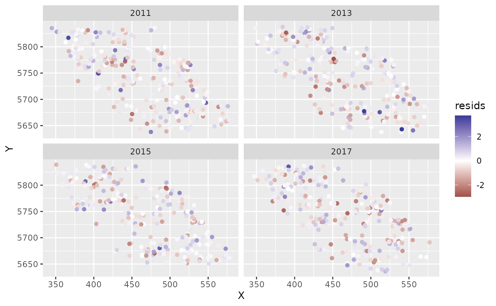
hist(predictions$resids)
qqnorm(predictions$resids);abline(a = 0, b = 1)
# Predictions onto new data --------------------------------------------
qcs_grid_2011 <- replicate_df(qcs_grid, "year", unique(pcod_2011$year))
predictions <- predict(m, newdata = qcs_grid_2011)
# \donttest{
# A short function for plotting our predictions:
plot_map <- function(dat, column = est) {
ggplot(dat, aes(X, Y, fill = {{ column }})) +
geom_raster() +
facet_wrap(~year) +
coord_fixed()
}
plot_map(predictions, exp(est)) +
scale_fill_viridis_c(trans = "sqrt") +
ggtitle("Prediction (fixed effects + all random effects)")
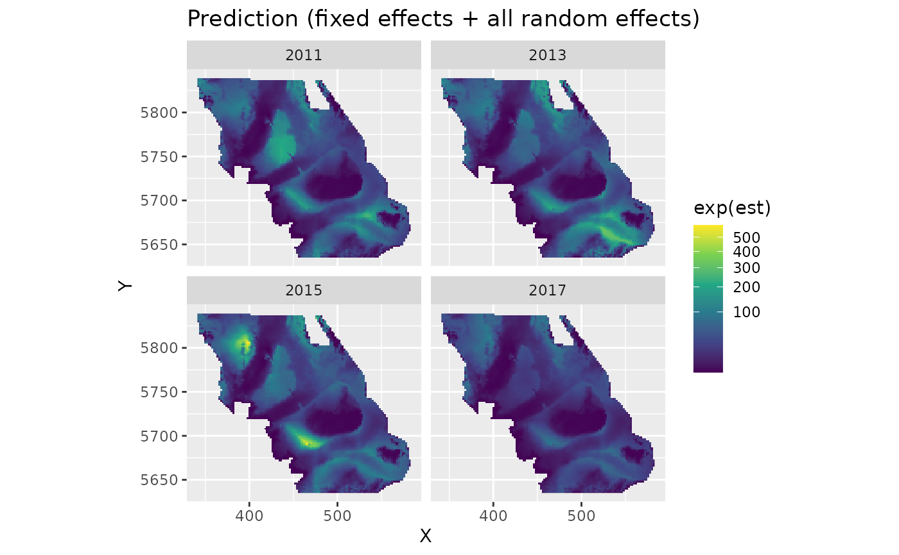
plot_map(predictions, exp(est_non_rf)) +
ggtitle("Prediction (fixed effects and any time-varying effects)") +
scale_fill_viridis_c(trans = "sqrt")
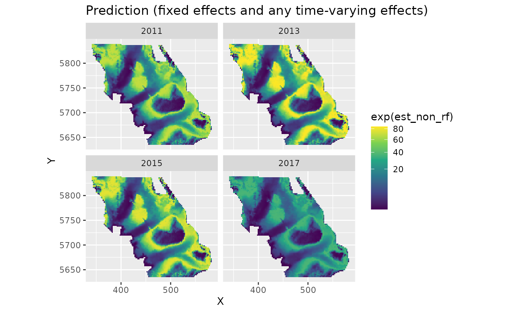
plot_map(predictions, est_rf) +
ggtitle("All random field estimates") +
scale_fill_gradient2()
 plot_map(predictions, omega_s) +
ggtitle("Spatial random effects only") +
scale_fill_gradient2()
plot_map(predictions, omega_s) +
ggtitle("Spatial random effects only") +
scale_fill_gradient2()
 plot_map(predictions, epsilon_st) +
ggtitle("Spatiotemporal random effects only") +
scale_fill_gradient2()
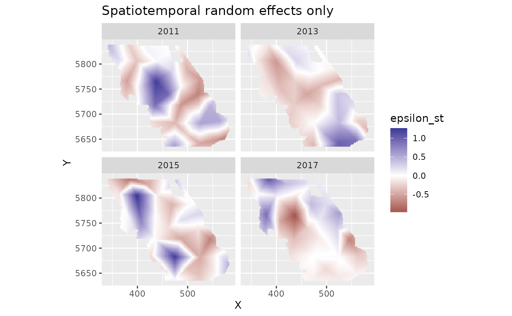
# Visualizing a marginal effect ----------------------------------------
# See the visreg package or the ggeffects::ggeffect() or
# ggeffects::ggpredict() functions
# To do this manually:
nd <- data.frame(depth_scaled =
seq(min(d$depth_scaled), max(d$depth_scaled), length.out = 100))
nd$depth_scaled2 <- nd$depth_scaled^2
# Because this is a spatiotemporal model, you'll need at least one time
# element. If time isn't also a fixed effect then it doesn't matter what you pick:
nd$year <- 2011L # L: integer to match original data
p <- predict(m, newdata = nd, se_fit = TRUE, re_form = NA)
ggplot(p, aes(depth_scaled, exp(est),
ymin = exp(est - 1.96 * est_se), ymax = exp(est + 1.96 * est_se))) +
geom_line() + geom_ribbon(alpha = 0.4)
plot_map(predictions, epsilon_st) +
ggtitle("Spatiotemporal random effects only") +
scale_fill_gradient2()
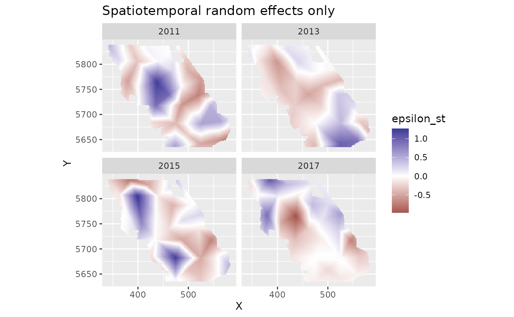
# Visualizing a marginal effect ----------------------------------------
# See the visreg package or the ggeffects::ggeffect() or
# ggeffects::ggpredict() functions
# To do this manually:
nd <- data.frame(depth_scaled =
seq(min(d$depth_scaled), max(d$depth_scaled), length.out = 100))
nd$depth_scaled2 <- nd$depth_scaled^2
# Because this is a spatiotemporal model, you'll need at least one time
# element. If time isn't also a fixed effect then it doesn't matter what you pick:
nd$year <- 2011L # L: integer to match original data
p <- predict(m, newdata = nd, se_fit = TRUE, re_form = NA)
ggplot(p, aes(depth_scaled, exp(est),
ymin = exp(est - 1.96 * est_se), ymax = exp(est + 1.96 * est_se))) +
geom_line() + geom_ribbon(alpha = 0.4)
 # Plotting marginal effect of a spline ---------------------------------
m_gam <- sdmTMB(
data = d, formula = density ~ 0 + as.factor(year) + s(depth_scaled, k = 5),
time = "year", mesh = mesh, family = tweedie(link = "log")
)
if (require("visreg", quietly = TRUE)) {
visreg::visreg(m_gam, "depth_scaled")
}
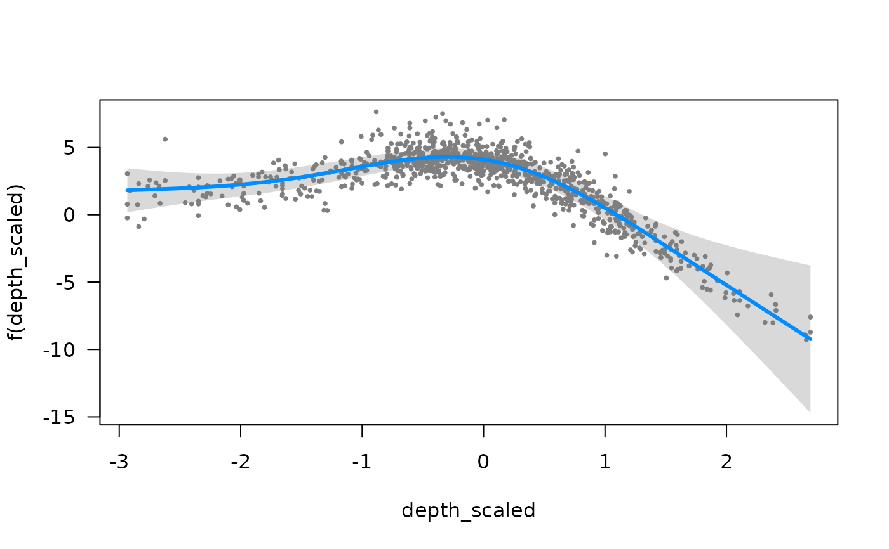
# or manually:
nd <- data.frame(depth_scaled =
seq(min(d$depth_scaled), max(d$depth_scaled), length.out = 100))
nd$year <- 2011L
p <- predict(m_gam, newdata = nd, se_fit = TRUE, re_form = NA)
ggplot(p, aes(depth_scaled, exp(est),
ymin = exp(est - 1.96 * est_se), ymax = exp(est + 1.96 * est_se))) +
geom_line() + geom_ribbon(alpha = 0.4)
# Plotting marginal effect of a spline ---------------------------------
m_gam <- sdmTMB(
data = d, formula = density ~ 0 + as.factor(year) + s(depth_scaled, k = 5),
time = "year", mesh = mesh, family = tweedie(link = "log")
)
if (require("visreg", quietly = TRUE)) {
visreg::visreg(m_gam, "depth_scaled")
}
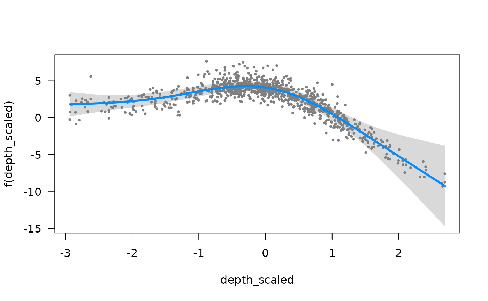
# or manually:
nd <- data.frame(depth_scaled =
seq(min(d$depth_scaled), max(d$depth_scaled), length.out = 100))
nd$year <- 2011L
p <- predict(m_gam, newdata = nd, se_fit = TRUE, re_form = NA)
ggplot(p, aes(depth_scaled, exp(est),
ymin = exp(est - 1.96 * est_se), ymax = exp(est + 1.96 * est_se))) +
geom_line() + geom_ribbon(alpha = 0.4)
 # Forecasting ----------------------------------------------------------
mesh <- make_mesh(d, c("X", "Y"), cutoff = 15)
unique(d$year)
#> [1] 2011 2013 2015 2017
m <- sdmTMB(
data = d, formula = density ~ 1,
spatiotemporal = "AR1", # using an AR1 to have something to forecast with
extra_time = 2019L, # `L` for integer to match our data
spatial = "off",
time = "year", mesh = mesh, family = tweedie(link = "log")
)
# Add a year to our grid:
grid2019 <- qcs_grid_2011[qcs_grid_2011$year == max(qcs_grid_2011$year), ]
grid2019$year <- 2019L # `L` because `year` is an integer in the data
qcsgrid_forecast <- rbind(qcs_grid_2011, grid2019)
predictions <- predict(m, newdata = qcsgrid_forecast)
plot_map(predictions, exp(est)) +
scale_fill_viridis_c(trans = "log10")
# Forecasting ----------------------------------------------------------
mesh <- make_mesh(d, c("X", "Y"), cutoff = 15)
unique(d$year)
#> [1] 2011 2013 2015 2017
m <- sdmTMB(
data = d, formula = density ~ 1,
spatiotemporal = "AR1", # using an AR1 to have something to forecast with
extra_time = 2019L, # `L` for integer to match our data
spatial = "off",
time = "year", mesh = mesh, family = tweedie(link = "log")
)
# Add a year to our grid:
grid2019 <- qcs_grid_2011[qcs_grid_2011$year == max(qcs_grid_2011$year), ]
grid2019$year <- 2019L # `L` because `year` is an integer in the data
qcsgrid_forecast <- rbind(qcs_grid_2011, grid2019)
predictions <- predict(m, newdata = qcsgrid_forecast)
plot_map(predictions, exp(est)) +
scale_fill_viridis_c(trans = "log10")
 plot_map(predictions, epsilon_st) +
scale_fill_gradient2()
plot_map(predictions, epsilon_st) +
scale_fill_gradient2()
 # Estimating local trends ----------------------------------------------
d <- pcod
d$year_scaled <- as.numeric(scale(d$year))
mesh <- make_mesh(pcod, c("X", "Y"), cutoff = 25)
m <- sdmTMB(data = d, formula = density ~ depth_scaled + depth_scaled2,
mesh = mesh, family = tweedie(link = "log"),
spatial_varying = ~ 0 + year_scaled, time = "year", spatiotemporal = "off")
nd <- replicate_df(qcs_grid, "year", unique(pcod$year))
nd$year_scaled <- (nd$year - mean(d$year)) / sd(d$year)
p <- predict(m, newdata = nd)
plot_map(subset(p, year == 2003), zeta_s_year_scaled) + # pick any year
ggtitle("Spatial slopes") +
scale_fill_gradient2()
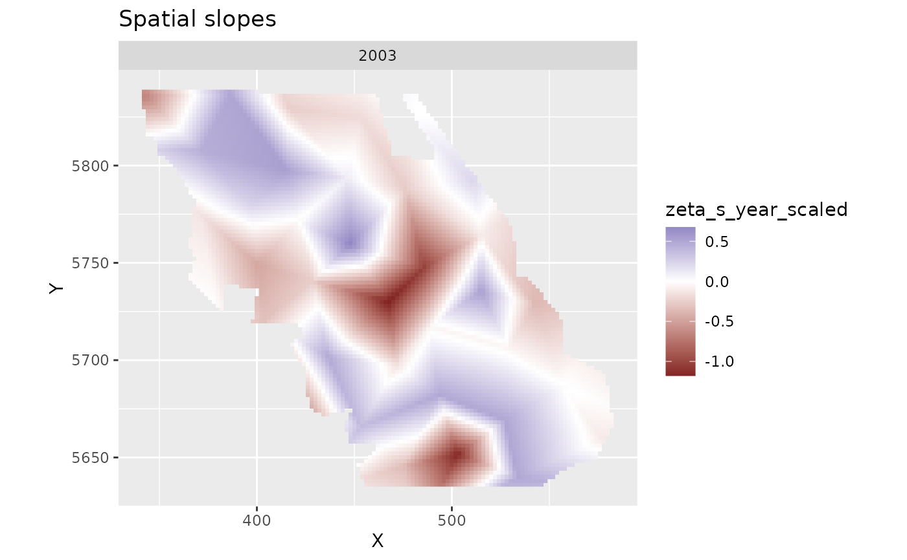
plot_map(p, est_rf) +
ggtitle("Random field estimates") +
scale_fill_gradient2()
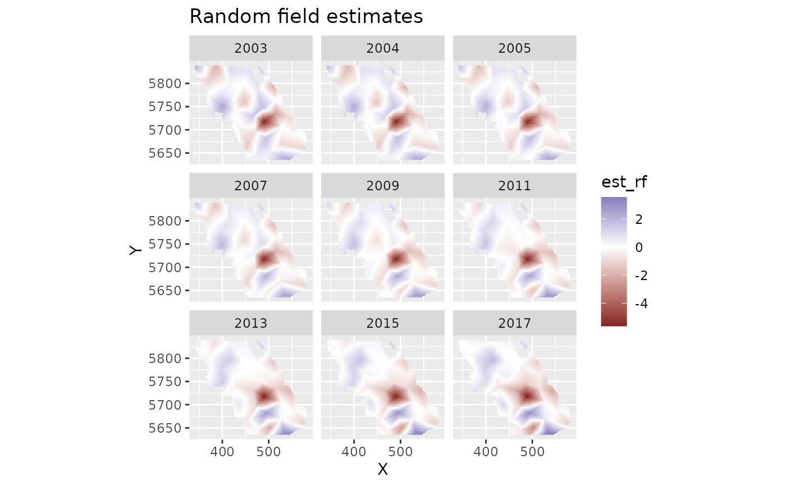
plot_map(p, exp(est_non_rf)) +
ggtitle("Prediction (fixed effects only)") +
scale_fill_viridis_c(trans = "sqrt")
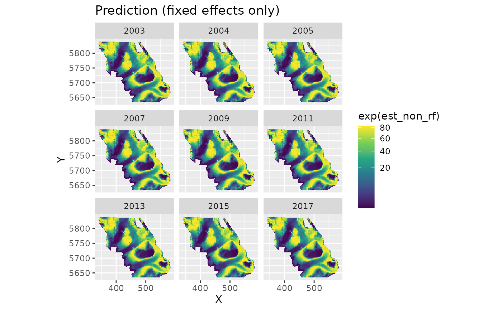
plot_map(p, exp(est)) +
ggtitle("Prediction (fixed effects + all random effects)") +
scale_fill_viridis_c(trans = "sqrt")
# }
# Estimating local trends ----------------------------------------------
d <- pcod
d$year_scaled <- as.numeric(scale(d$year))
mesh <- make_mesh(pcod, c("X", "Y"), cutoff = 25)
m <- sdmTMB(data = d, formula = density ~ depth_scaled + depth_scaled2,
mesh = mesh, family = tweedie(link = "log"),
spatial_varying = ~ 0 + year_scaled, time = "year", spatiotemporal = "off")
nd <- replicate_df(qcs_grid, "year", unique(pcod$year))
nd$year_scaled <- (nd$year - mean(d$year)) / sd(d$year)
p <- predict(m, newdata = nd)
plot_map(subset(p, year == 2003), zeta_s_year_scaled) + # pick any year
ggtitle("Spatial slopes") +
scale_fill_gradient2()
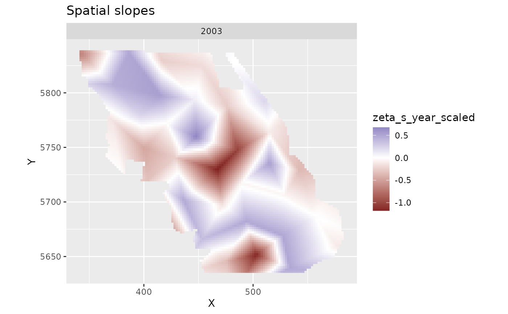
plot_map(p, est_rf) +
ggtitle("Random field estimates") +
scale_fill_gradient2()
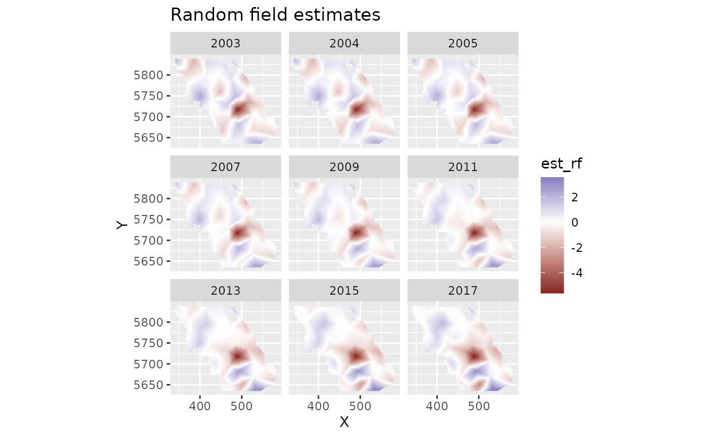
plot_map(p, exp(est_non_rf)) +
ggtitle("Prediction (fixed effects only)") +
scale_fill_viridis_c(trans = "sqrt")
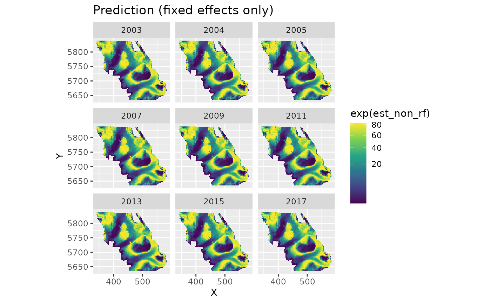
plot_map(p, exp(est)) +
ggtitle("Prediction (fixed effects + all random effects)") +
scale_fill_viridis_c(trans = "sqrt")
# }